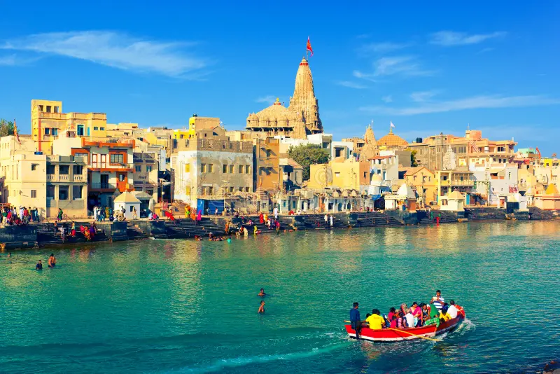

SOMNATH
HISTORY:-
Somnath is a magnificent temple situated in Sagar Kant of Saurashtra in Gujarat state. One of the 12 holy Jyotirlingas of Lord Shiva is in Jyotirlinga here in Somnath. Somnath is also mentioned in Rigveda. This temple of Somnath has been very attractive in front of many destructive foreign invaders who want to lure and convert to the temple glory. Whenever the temple has tried to destroy it, then it has been built again.
SOMNATH:-
Somnath’s first temple is said to have existed 2000 years ago. Is. In 649 AD, King Maitre of Vallabhini built a second temple in place of the temple and renovated it. In 725, the old ruler of Sindh took his army and attacked the temple and destroyed the temple. Pratishtha King Nag Bhatt II constructed the temple for the third time in 815 using a red stone (sandstone) stone. In 1026, Mahmud Ghazni lent the precious jewels and property of Somnath temple. After looting, slaughtering innumerable pilgrims of the temple and burning the temple and destroying it. During 1026-1042 Solanki Raja Bhimdev built the fourth temple of Bhoj and Anhilwad Patan, Parmar King of Malwa.Somnath was destroyed when Delhi Sultanate occupied Gujarat in 1299. In 1394 it was destroyed again. In 1706, Mughal ruler Aurangzeb again demolished the temple.
RECONSTRUCTION:-
India’s Iron Man and First Deputy Prime Minister Sardar Vallabhbhai Patel on November 13, 1947 promised to rebuild the temple. Today’s Somnath Temple is built on its original place in seventh place. When the temple was rebuilt on December 1, 1995, then the Indian President Dr. Shankar Dayal Sharma dedicated the temple to the country. In 1951, when India’s first President Dr. When Rajendra Prasad proposed to purify Jyotirling, he said, “This temple of Somnath is a symbol of victory over construction on destruction”. [Citation needed] The temple is built under Shri Somnath Trust And this trust is now monitoring the temple. Currently the chairman of the trust is former chief minister Keshubhai Patel and Sardar Patel was the first chairman of this trust.
The Kailash Mahameru Prasad Temple, built by Chalukya style, has a spectacular display of the art of Sompura artisans of Gujarat. This type of construction has not happened in the last 800 years. According to the inscription written in Sanskrit on the coast, only the sea exists between the temple and the southern part of the planet and there is no land.
DWARKA

The Dwarkadhish temple, also known as the Jagat Mandir and occasionally spelled Dwarakadheesh, is a Hindu temple dedicated to Krishna, who is worshiped here by the name Dwarkadhish, or 'King of Dwarka'. The temple is located at Dwarka city of Gujarat, India, which is one of the destinations of Char Dham, a Hindu pilgrimage circuit. The main shrine of the five-storied building, supported by 72 pillars, is known as Jagat Mandir or Nija Mandir. Archaeological findings suggest the original temple was built in 200 BCE at the earliest. The temple was rebuilt and enlarged in the 15th–16th century.
According to tradition, the original temple was believed to have been built by Krishna's grandson, Vajranabha, over the hari-griha (Krishna's residential place). The original structure was destroyed by Mahmud Begada in 1472, and subsequently rebuilt in the 15th–16th century,[citation needed] in the Māru-Gurjara style.
The temple became part of the Char Dham pilgrimage considered sacred by Hindus in India. Adi Shankaracharya, the 8th century Hindu theologian and philosopher, visited the shrine. The other three being comprising Rameswaram, Badrinath and Puri. Even today a memorial within the temple is dedicated to his visit. Dwarakadheesh is the 98th Divya Desam of Vishnu on the subcontinent, glorified in the Divya Prabandha sacred texts. The temple is at an elevation of 12.19 metres (40.0 ft) above mean sea-level. It faces west. The temple layout consists of a garbhagriha (Nijamandira or Harigraha) and an antarala (an antechamber). However, the existing temple is dated to 16th century.
JUNAGATH GIRNAR

Standing tall at 3672 feet, Girnar is an ancient hill in Junagadh. This centuries old hill is covered with 866 Hindu and Jain temples that are spread over the summits. One will have to climb 9999 steps to reach the final summit. Trek to Girnar Hill starts from Girnar Taleti.
Places that one will come across on a trek to Girnar Hill are Domdar Kund, near the Damodar and Baldvji temples. Historians say that 15th-century poet Narsinh Mehta used to bath in the Domdar Kund and composed many of its beautiful hymns here. As one walks through the rocky paths to visit other summits, travellers will across many temples of different sects of Hinduism. In this series of temples, one will come across Bhavnath Temple where one can see 'naked sadhus' that come to celebrate Shivratri. After 4000 steps up, 800 steps before the first summit, one will reach a plateau with a Jain temple complex. Mostly Jain temples here are dating back to 12th century and are the place where 22nd Tirthankar of Jain religion, died after 700 years of ascetic meditation. After walking 2000 steps, one will start noticing the panoramic view of the Girnar hill. Then the stone trail continues 1000 steps down and 1000 steps back up, to reach the other summits. The last temple on the Girnar Hill is the temples to Kalika, where one can see Aghora sadhus covered from head to toe with the funeral ashes.
An early morning walk to the Girnar Hill is a blissful experience that stays with tourist's memory throughout life. Hindu and Jain devotees often visit these temples as they are sacred. People who are looking for a little adventure and fun can visit for the breath-taking view of the scenery and the architecture of the temples in addition to the challenging clim